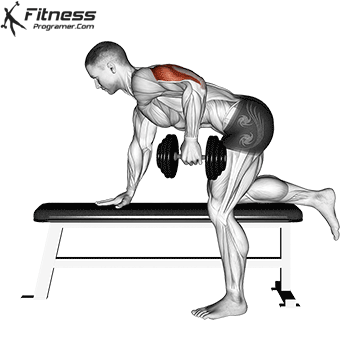
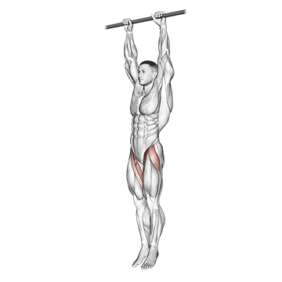
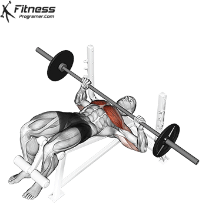
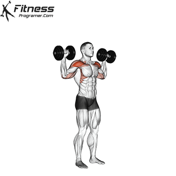
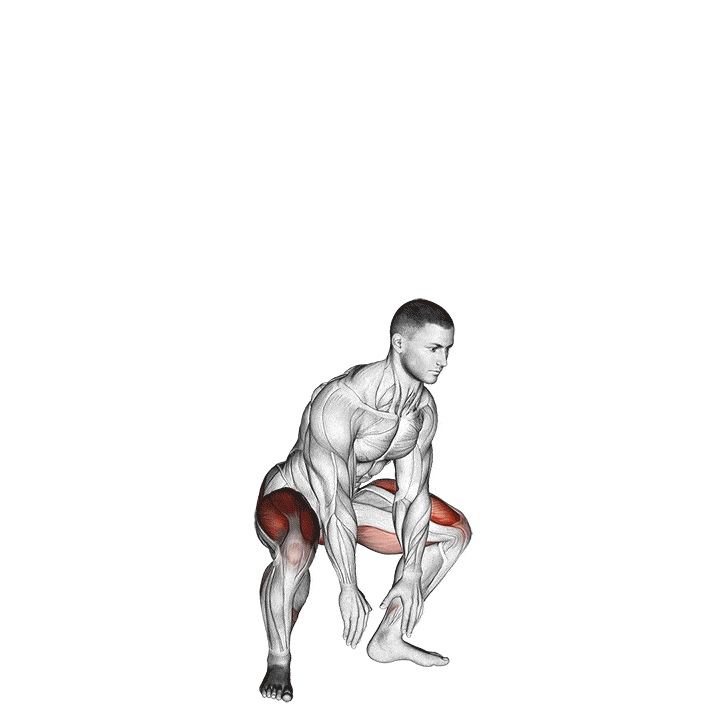
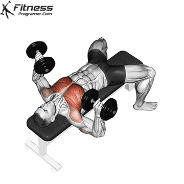
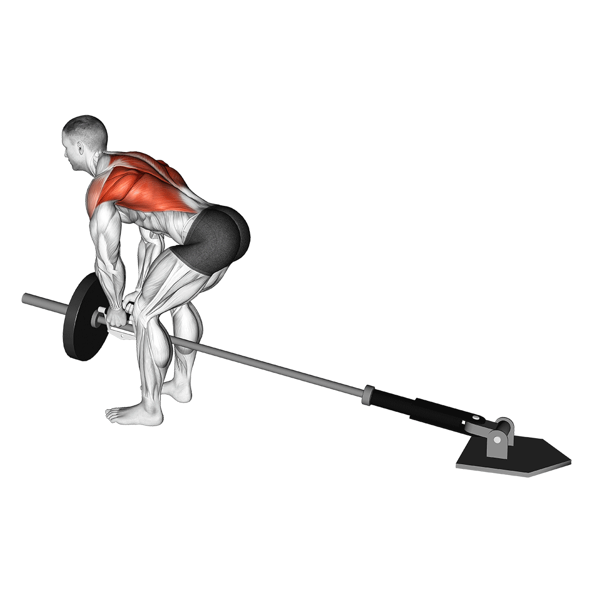

1. Barbell Squats (Halter): 4 sets of 8-10 reps

2. Incline Dumbbell Press (Dumbles): 4 sets of 8-10 reps
3. Barbell Deadlifts (Halter): 4 sets of 8-10 reps

4. Seated Dumbbell Shoulder Press (Dumbles): 4 sets of 8-10 reps

5. Walking Lunges (Dumbles): 4 sets of 10-12 reps per leg

6. Dumbbell Hammer Curls (Dumbles): 4 sets of 10-12 reps

7. Tricep Kickbacks (Dumbles): 4 sets of 10-12 reps
8. Hanging Leg Raises: 3 sets of 15 reps
9. Russian Twists (Weighted): 3 sets of 20 reps
10. Jumping Jacks: 3 sets of 1 minute
11. Burpees: 3 sets of 15 reps

12. Cardio: 20 minutes of high-intensity interval training (HIIT)
1. Pull-ups: 4 sets of 8-10 reps

2. Flat Barbell Bench Press (Halter): 4 sets of 8-10 reps
3. One-Arm Dumbbell Row (Dumbles): 4 sets of 8-10 reps per side

4. Arnold Press (Dumbles): 4 sets of 8-10 reps
5. Cable Chest Flyes: 4 sets of 10-12 reps
6. Dumbbell Skull Crushers (Dumbles): 4 sets of 10-12 reps
7. Preacher Curls (Dumbles): 4 sets of 10-12 reps
8. Planks with Shoulder Taps: 3 sets of 20 taps
9. Mountain Climbers: 3 sets of 1 minute

10. High Knees: 3 sets of 1 minute
11. Jump Squats: 3 sets of 15 reps
12. Cardio: 20 minutes of steady-state cardio
1. Front Squats (Halter): 4 sets of 8-10 reps
2. Romanian Deadlifts (Dumbles): 4 sets of 8-10 reps

3. Leg Press: 4 sets of 10-12 reps

4. Leg Curls: 4 sets of 10-12 reps

5. Standing Calf Raises: 4 sets of 15-20 reps

6. Bulgarian Split Squats (Dumbles): 4 sets of 10-12 reps per leg

7. Glute Bridges: 4 sets of 12-15 reps
8. Box Jumps: 3 sets of 15 reps
9. Jump Rope: 3 sets of 1 minute
10. Russian Twists: 3 sets of 20 reps

11. Lateral Lunges: 3 sets of 15 reps per leg
12. Cardio: 20 minutes of moderate-intensity cardio
1. Circuit 1: 3 rounds
Push-ups: 20 reps

Goblet Squats (Dumbles): 20 reps
Bicycle Crunches: 30 reps

2. Circuit 1: 3 rounds
Dumbbell Shoulder Press (Dumbles): 15 reps

Bent Over Dumbbell Rows (Dumbles): 15 reps

Plank with Shoulder Taps: 20 taps
3. Kettlebell Swings: 4 sets of 20 reps

4. Box Jumps: 4 sets of 15 reps
5. Jumping Lunges: 4 sets of 15 reps per leg

6. Burpees: 4 sets of 15 reps
7. Dumbbell Flyes: 4 sets of 15 reps

8. Tricep Dips: 4 sets of 15 reps

9. Hammer Curls (Dumbles): 4 sets of 15 reps

10. Jump Rope: 4 sets of 1 minute
or Jumping Jacks: 3 sets of 1 minute
11. Plank with Leg Lifts: 3 sets of 20 lifts
12. Cardio: 20 minutes of high-intensity interval training (HIIT)
1. Deadlifts (Halter): 4 sets of 8-10 reps
2. Dumbbell Bench Press (Dumbles): 4 sets of 8-10 reps
3. T-Bar Rows (Halter): 4 sets of 8-10 reps
4. Military Press (Halter): 4 sets of 8-10 reps

5. Dumbbell Split Squats (Dumbles): 4 sets of 10-12 reps per leg
6. Barbell Bicep Curls (Halter): 4 sets of 10-12 reps

7. Overhead Tricep Extension (Dumbles): 4 sets of 10-12 reps
8. Russian Twists (Weighted): 3 sets of 20 reps
9. Bicycle Crunches: 3 sets of 20 reps
10. Jumping Jacks: 3 sets of 1 minute
11. Burpees: 3 sets of 15 reps
12. Cardio: 20 minutes of moderate-intensity cardio
1. Chin-ups: 4 sets of 8-10 reps
2. Incline Barbell Bench Press (Halter): 4 sets of 8-10 reps

3. Seated Cable Rows: 4 sets of 8-10 reps

4. Dumbbell Lateral Raises (Dumbles): 4 sets of 10-12 reps

5. Dumbbell Pullover (Dumbles): 4 sets of 10-12 reps
6. Tricep Rope Pushdowns: 4 sets of 10-12 reps

7. Barbell Curl (Halter): 4 sets of 10-12 reps

8. Hanging Leg Raises: 3 sets of 15 reps
9. Plank with Shoulder Taps: 3 sets of 20 taps
10. Mountain Climbers: 3 sets of 1 minute
11. High Knees: 3 sets of 1 minute
12. Cardio: 20 minutes of moderate-intensity cardio
1. Sumo Deadlifts (Halter): 4 sets of 8-10 reps
2. Walking Lunges (Dumbles): 4 sets of 10-12 reps per leg
3. Leg Extensions: 4 sets of 10-12 reps

4. Leg Curls: 4 sets of 10-12 reps
5. Standing Calf Raises: 4 sets of 15-20 reps
6. Barbell Hip Thrusts: 4 sets of 10-12 reps

7. Box Jumps: 4 sets of 15 reps
8. Jump Rope: 4 sets of 1 minute
9. Russian Twists: 3 sets of 20 reps
10. Mountain Climbers: 3 sets of 1 minute
11. Jump Squats: 4 sets of 15 reps
12. Cardio: 20 minutes of steady-state cardio
1. Circuit 1: 3 rounds
Push-ups: 20 reps
Goblet Squats (Dumbles): 20 reps
Bicycle Crunches: 30 reps
2. Circuit 1: 3 rounds
Dumbbell Shoulder Press (Dumbles): 15 reps
Bent Over Dumbbell Rows (Dumbles): 15 reps
Plank with Shoulder Taps: 20 taps
3. Kettlebell Swings: 4 sets of 20 reps
4. Box Jumps: 4 sets of 15 reps
5. Jumping Lunges: 4 sets of 15 reps per leg
6. Burpees: 4 sets of 15 reps
7. Dumbbell Flyes: 4 sets of 15 reps
8. Tricep Dips: 4 sets of 15 reps
9. Hammer Curls (Dumbles): 4 sets of 15 reps